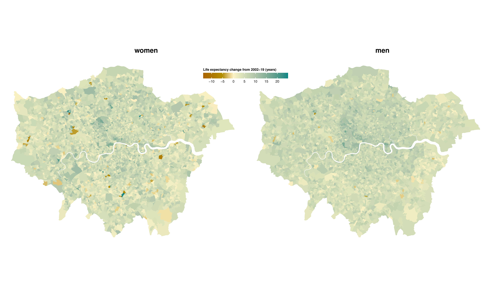
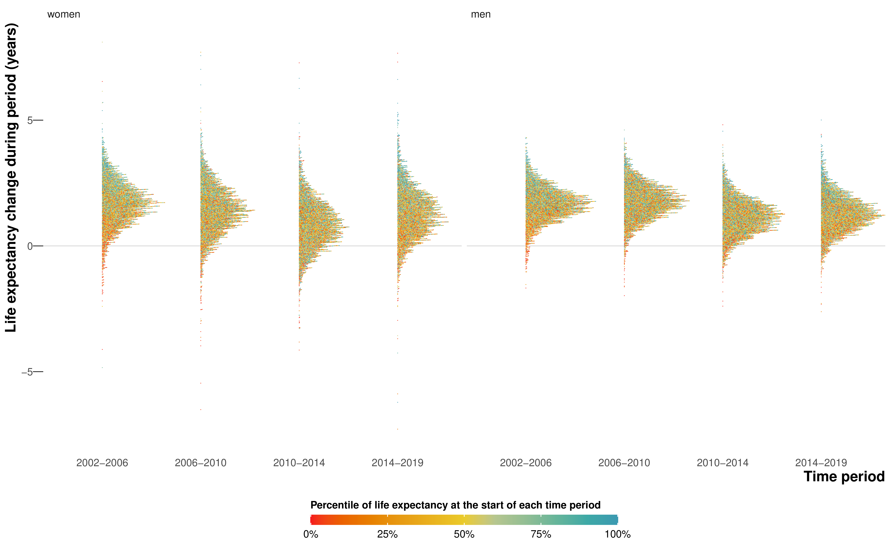
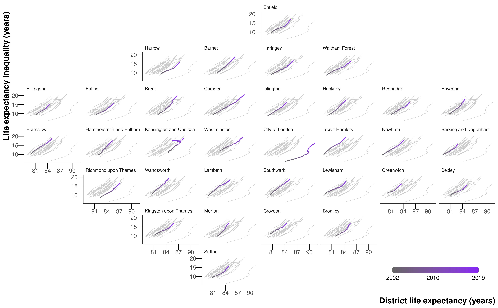
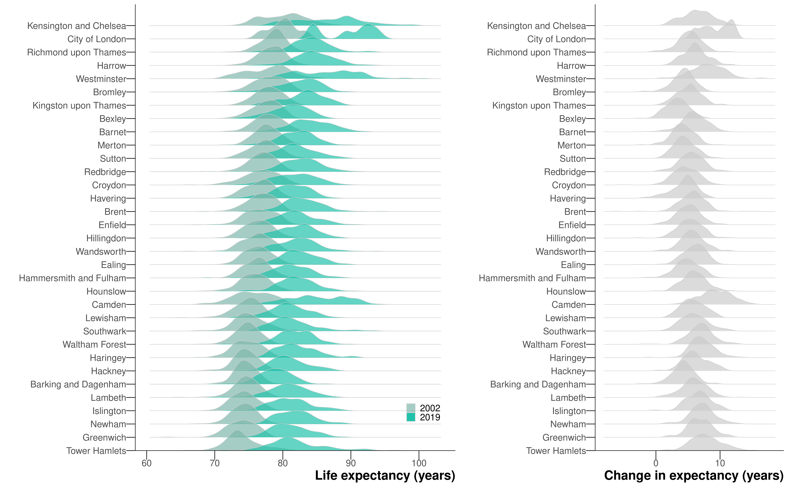

5 Smaller: Life expectancy inequality in London at the LSOA level
This chapter is based on the peer-reviewed publication Changes in life expectancy and house prices in London from 2002 to 2019: hyper-resolution spatiotemporal analysis of death registration and real estate data, published in The Lancet Regional Health Europe [CITE when it comes out], for which I was joint first author. The paper combined two main datasets: estimates of life expectancy in London at LSOA level and estimates of house prices at the OA level. Unlike the original text, I will focus only on the life expectancy estimates, for which I was responsible, rather than the house price estimates produced by James Bennett.
5.1 Overview
5.2 Methods
5.2.1 Mortality and population data
I performed a high-resolution spatiotemporal analysis of civil registration data in which I extracted de-identified data for all deaths in London from 2002 to 2019 (909,097 death records, extract date: 25th June 2021) Deaths were stratified by 19 age groups (\(0, 1–4, 5–9, ..., 80–84, 85+\)) and 4835 LSOAs. These LSOAs fit inside 33 districts: London’s 32 boroughs and the City of London. I did not use 16 death records (\(0.002%\)) for which sex was not recorded. In 3267 (0.099%) age-LSOA-year combinations, the number of deaths exceeded population. In 88% of these combinations the deaths exceeded population by only one or two, and 96% of these combinations were in people aged 80 years and older. In these cases, the population was set equal to the number of deaths.
5.2.2 House price estimates
We scraped data from real estate website Rightmove for all London postcodes, obtaining 2.1 million sales records for years 2002–2019. We used postcode to map homes to 24,131 (96.4% of 25,031) OAs in London which belonged to 4830 LSOAs (>99% of 4835). The 900 (3.6%) OAs with no sales over this period tended to be places with higher proportions of rented housing, especially rented social housing.
We then used a mixed-effects model to estimate the house price at OA level. The model was formulated to take into account how prices vary in relation to location, time and characteristics of the property. Specifically, the model included effects for the following: OA and district of the house, quarter of year in which the transaction took place, price, type of house (flat, terraced, semi-detached, detached house), status of land ownership (freehold (owns the property and the land upon which the property is built), leasehold (owns the property but not the land, which is leased)), whether the property is an existing property or newly constructed, and number of bedrooms, and interactions between the effects. Further details can be found in the paper [cite paper]. We used the median of all constituent OAs for each LSOA’s price. Here, I present the price estimates for a two-bedroom leasehold existing (not newly constructed) flat sold in the spring season. Two-bedroom leasehold flats were the most common type of sale during the study period with 19.7% of sales.
5.2.3 Statistical analysis
The model was the same as Chapter 4, with a few changes: First, the negative binomial likelihood from Equation 4.1 was replaced with a beta-binomial likehlihood, \[ \text{deaths}_{ast} = \text{Beta-Binomial}(m_{ast} \rho, (1 - m_{ast}) \rho, \text{Population}_{ast}). \tag{5.1}\] where \(m_{ast}\) is the death rate and \(\rho \geq 0\) is the overdispersion parameter. I found that the variability of the LSOA-level mortality data was such that death rates did near 1, violating the assumption for Equation 4.1 that deaths are rare events. In fact, when I tested a negative binomial or Poisson likelihood, I found the death rates for some age-LSOA-year combinations exceeded 1, which of course is impossible in the real world. The beta-binomial likelihod is a generalisation to the binomial distribution that allows for overdispersion. The death rates were logit-transformed and the model structure is otherwise the same as Equation 4.3, but using nested hierarchical random effects with LSOAs nested in MSOAs, which were nested in districts. A \(\rho \sim \exp (0.1)\) hyperpriors was used for the overdisperion term, and \(\sigma \sim \mathcal{N}^+(1)\) for the standard deviation parameters, as recommended by the Stan development team (PriorChoiceRecommendations2020?).
Table B.2 shows all model parameters, their priors and dimensions.
I again used NIMBLE for MCMC (de Valpine et al., 2022, 2017), with four chains of 80,000 iterations, discarding the first 30,000, thinning the remainder by 200 and checking for covergence using trace plots and R-hat (Vehtari et al., 2021).
The local effect of the Grenfell Tower fire was even more pronounced at the LSOA level. In 2017, the LSOA in Kensington and Chelsea where Grenfell Tower is located had 75 deaths, compared to less than 15 in 2016 and 2018. The additional deaths were caused by a fire in a highrise residential building. I used the same treatment as in Chapter 4 to remove the outlier from the modelling stage and add the excess mortality in at a later stage before calculating life expectancies. I defined life expectancy inequality as the difference between 2.5th and 97.5th percentiles of LSOA life expectancies.
To investigate the extent that life expectancy change is accompanied with changes in the characteristics of LSOA populations, I report the Spearman’s (rank) correlations of change in price with the following characteristics, separately for each decile of house price in 2002:
- Change in house price.
- Change in households living in the LSOA during the period 2002–2019 as measured by population turnover.
- Change in share of the LSOA population in the age groups 0–14, 15–29, 30–69 and 70+ years.
- Change in rank of LSOA in terms of the poverty, unemployment and low education measures of deprivation.
Scores of deprivation variables are not comparable between years, so I only consider the change in ranking. In order to use a consistent measure of correlation, and account for potential non-linear associations, I used Spearman’s rank correlation for all variables.
5.3 Results
5.3.1 Inequalities in life expectancy
Life expectancy at birth for London increased from 80.9 (95% CrI 80.8–81.0) years in 2002 to 85.4 (85.3–85.5) years in 2019 for women, and from 76.1 (76.0–76.2) years to 81.6 (81.5–81.7) years for men. Life expectancy inequality (difference between 2.5th and 97.5th percentiles) was 19.1 (18.4–19.7) years for women and 17.2 (CrI 16.7–17.8) years for men, in 2019 which is a substantial increase from 11.1 (10.7–11.5) years for women and 11.6 (CrI 11.3–12.0) years for men in 2002. The corresponding estimates for life expectancy inequality in 2019 calculated using MSOA level analysis in Chapter 4 were 10.8 (10.3–11.3) years for women and 11.0 (10.5–11.6) years for men.

Life expectancy in 2019 was highest in LSOAs in central London districts of Kensington and Chelsea, Westminster, City of London and Camden, in the southwest (Richmond upon Thames and Kingston upon Thames) and parts of the northwest (e.g., parts of Harrow and Barnet), with life expectancy in many LSOAs surpassing 90 years (Figure 5.1). Low life expectancy was spread in LSOAs throughout the city but was more common in outer east and southeast London.
5.3.2 Change in life expectancy and inequality

There was large variation across London in how much life expectancy increased from 2002 to 2019, ranging from <2 years in 537 (11.1%) LSOAs for women and 214 (4.4%) for men to >10 years in 220 (4.6%) for women and 211 (4.4%) for men (Figure 5.2). In 134 (2.8%) LSOAs for women and 32 (0.7%) for men, life expectancy may have declined, with a posterior probability of a decline greater than 80% in 41 (0.8%) and 14 (0.3%) LSOAs for women and men, respectively. Life expectancy increased more in LSOAs in central and inner east and south London than in outer areas.

The rate of increase in life expectancy was smaller after 2010 compared to the earlier years for both sexes (Figure 5.3), and the number of LSOAs in which life expectancy may have fallen was larger, especially from 2010 to 2014. The slow-down or reversal of LSOA life expectancy after 2010 is consistent with the pattern seen throughout England’s MSOAs in Chapter 4, which may be partly due to increase in poverty due to low-wage employment and cuts in services in the austerity era. However, the progressive worsening of life expectancy gain and loss from 2010–2014 to 2014–2019 which was seen in other parts of England did not happen in London (Figure 5.3).


There was substantial variation in the size of life expectancy increase over short distances. As a result of this spatial heterogeneity, life expectancy inequality increased not only in London as a whole, but also in every district in London alongside increasing average life expectancy (Figure 5.4 and Figure 5.5).


By 2019, female and male life expectancies had a 2.5th–97.5th percentile range that was >12 years in every district, and >20 years in three districts for men and two for women. In 2002, within district inequality had been >12 years in only two districts for men and none for women. At the same time, the difference between districts with the highest and lowest life expectancy increased from 5.9 (5.2–7.7) years in 2002 to 8.5 (5.9–11.9) years in 2019 for females, and from 6.8 (5.9–8.7) years to 10.9 (8.2–14.2) years for males indicating that the rise in life expectancy inequality took place both within and between districts.

Life expectancy increase was also associated with changes in the LSOA resident population and their socioeconomic characteristics (Figure 5.6). The association was weaker in the women and in LSOAs that were already expensive in 2002. There was some association between increase in life expectancy and increase in house price for the LSOAs that were least expensive in 2002. Although there was no obvious pattern between life expectancy increases and the share of households who had not lived there in 2002, male life expectancy was also associated with a larger rise in the share of population in working ages (30–69 years), and a larger decline in the share of population in young adulthood (15–29 years). The LSOAs that improved their rankings in terms of education and skills, poverty and employment experienced the largest increases in life expectancy.
5.3.3 House price
5.4 Discussion
5.4.1 Strengths and limitations
I defined life expectancy inequality as the difference between 2.5th and 97.5th percentiles of LSOA life expectancies rather than min-max
5.4.2 Comparison with previous literature
LDL, Yu, Bilal, Jonker
London wards, joint modelling of disability free and total life expectancy in census years, obtain better DFLE Congdon (2014)